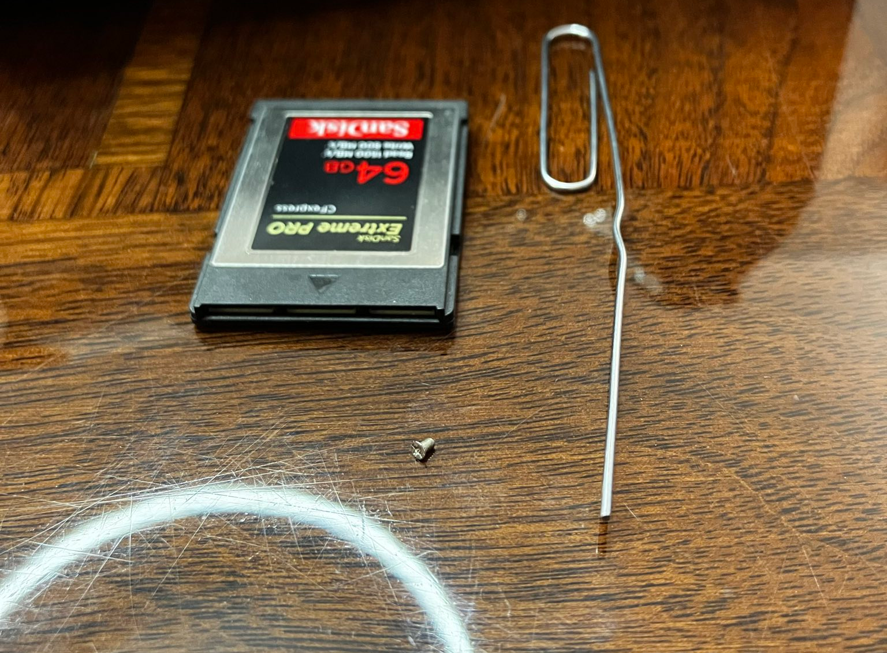
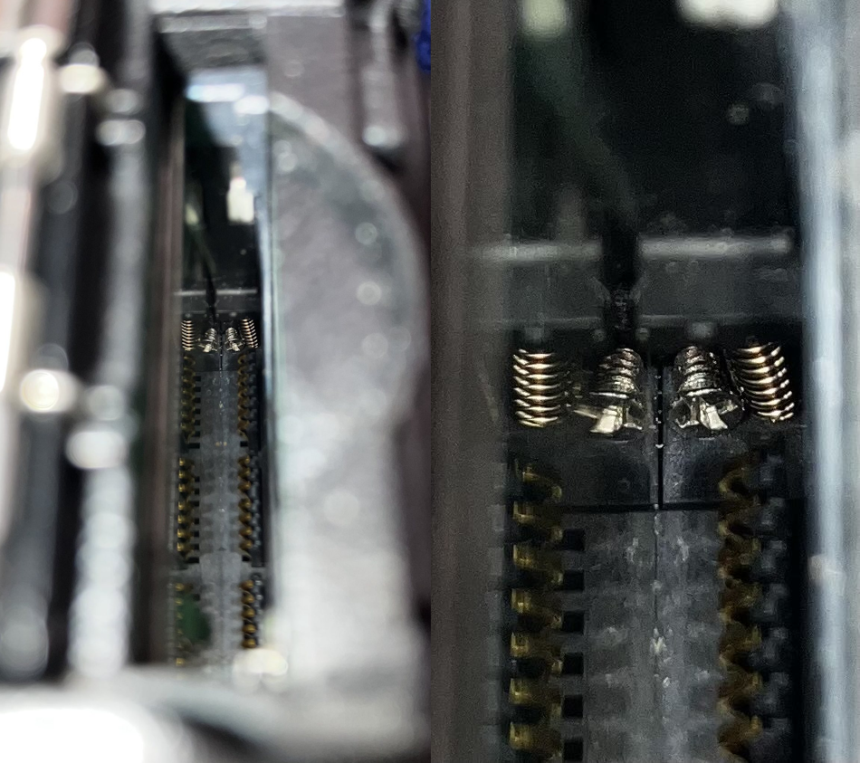
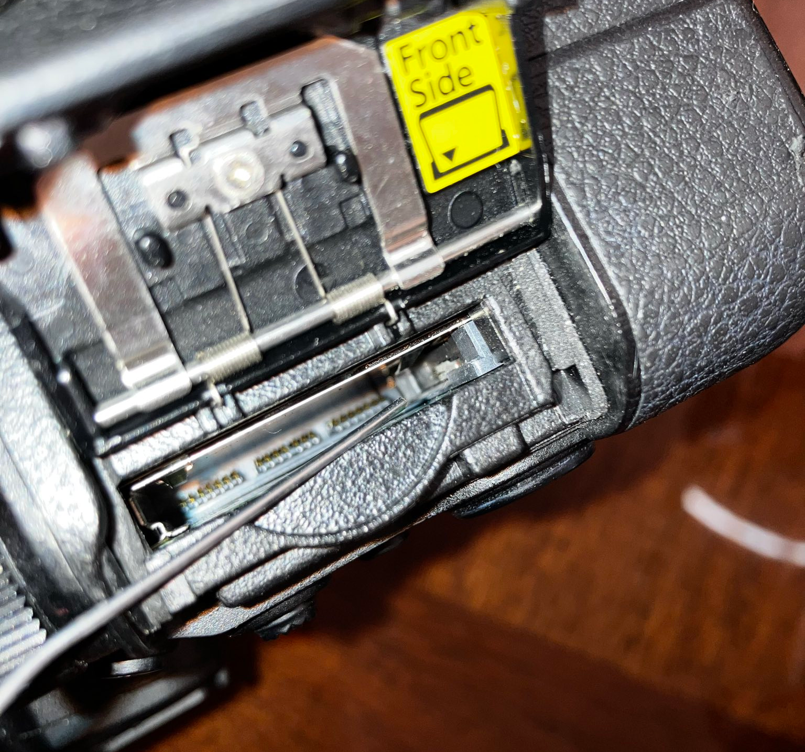

The memory card won’t seat in my Nikon Z7
I have a Nikon Z7, last weekend I tried to swap out its memory card for another, but the memory card wouldn’t stay in the slot. It kept popping back out! How annoying. But I was lucky, if I closed the cover fast enough the card would stay in its slot and continue to work. It usually took a few tries, but it was good enough for the moment.
After a bit of Googling and reading similar posts in the DPReview forums where the camera was sent back to Nikon, I decided to try fixing this problem myself. I have two Nikon Z7 bodies, so I was able to compare the function of the memory card slot side by side on my dining room table. I noticed that on my good camera the memory card slotted down until it was flush with body of the camera. But on the camera where the card wouldn’t stay inserted the top edge of the memory card floated a few millimeters above the edge. This was evidence that there was a physical problem with the slot.
Using the light on my phone I illuminated the inside of the slot to inspect it for damage. Comparing my two cameras side by side everything looked normal. All the copper CFExpress Type B pins were still attached, and their plastic shrouds were square and parallel to each other. The green PCB on one side of the slot had no stains or visible damage and the same was true of the metal plate on the opposite wall of the slot. Nothing appeared amiss.
In the far bottom corner of the memory card slot, I noticed a small spring. Based on its position I inferred that this was the retention spring that held the card in the slot and clicked when the card was correctly inserted in the slot. On my good camera there’s just empty space around this spring, but on my temperamental camera there was a single tiny screw that was sitting next to the spring. Finally, I’d found the culprit!
At first, I tried just beating the camera. This was a failure. My repeated attempts at slotting the memory card into this slot had firmly wedged the small screw into the small spring. I needed a thin, precise picking tool of some sort. Lacking the correct surgical instruments, I found a paper clip in my kitchen junk drawer. I bent out the paper to form a long lever that I could use to reach down into the memory card slot and pick out the screw.
The screw was freed and moved around the first time I touched it. I was elated. But the clearances are very tight between the spring and the wall around it. Even with the screw freed, shaking the camera and banging on it weren’t enough to get the screw to fall free using gravity. It was also difficult, due to the depth of the slot, to keep a light shined in there while trying to use the paper clip to pick at the screw. I solved this by holding the camera over the top of a lamp fixture so that the light would shine directly up from the lamp and into the card slot while I held it in air. After a few more attempts of picking at the screw it suddenly felt out and into the palm of my hand.
With the physical blockage cleared the memory card seated perfectly into the body of my Nikon Z7. All was now well in this small part of the world.